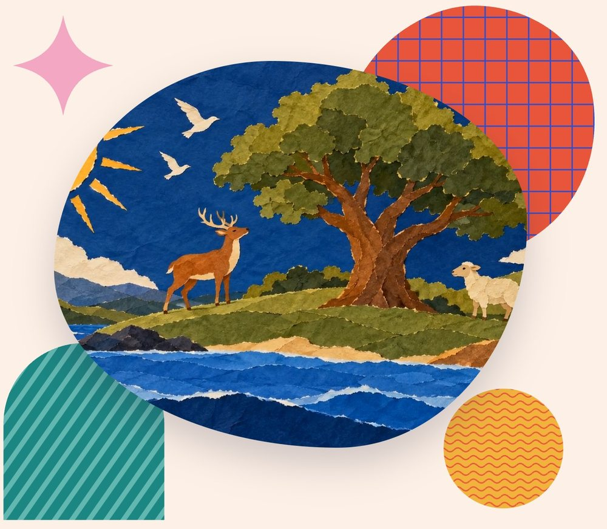

Welcome to the Kingdom!
A whole-Bible Sunday school, in two languages.바이블 킹덤에 오신 것을 환영해요
Children's worship any church can run — even without a children's pastor. Three years of video worship, sermon scripts, and homework for older and younger kids, all free.
어린이 사역자가 없어도 드릴 수 있는 어린이 주일 예배. 1·2·3년차 영상예배와 설교 원고, 고학년·저학년 숙제를 모두 무료로 드려요.

One video, three parts.한 영상, 세 부분
1 · Intro1 · 인트로
Opens the door to today's story.
오늘 이야기의 문을 여는 시간이에요.
2 · Sermon2 · 설교
The Bible story told at a child's eye level, with helper videos built in.
성경 이야기를 아이들 눈높이로 전해요. 도움영상이 설교 안에 함께 들어 있어요.
3 · Activity · Craft3 · 액티비티·공예
Kids remember the Word with their hands. Crafts are planned ahead for you.
손으로 만들며 말씀을 기억해요. 공예는 미리 준비되어 있어요.
Every lesson comes in Korean and English: full sermon script, homework for older kids, and homework for younger kids.모든 레슨은 한국어·영어로 — 설교 전체 원고, 고학년용 숙제, 저학년용 숙제가 함께 제공됩니다.
Three years, the whole Bible.3년이면 성경 전체를
One unit each season — fall, winter, spring, summer.
가을·겨울·봄·여름, 계절마다 한 단원씩 배워요.
| Fall가을 Sep–Nov9–11월 | Winter겨울 Dec–Feb12–2월 | Spring봄 Mar–May3–5월 | Summer여름 Jun–Aug6–8월 | |
|---|---|---|---|---|
| Year 11년차God's Word하나님의 말씀 | Genesis창세기 | Gospels 2복음서 2 | Gospels 3 · Paul복음서 3 · 바울서신 | Genesis · Exodus창세기 · 출애굽기 |
| Year 22년차Who God is하나님은 누구신가 | Exodus – Joshua출애굽기 – 여호수아 | Matthew마태복음 | Gospels – Acts복음서 – 사도행전 | Judges · Ruth · Samuel사사기 · 룻기 · 사무엘 |
| Year 33년차God's power & worship하나님의 능력과 예배 | Samuel · 1 Chronicles · 1 Kings사무엘상하 · 역대상 · 열왕기상 | John요한복음 | Mark – Acts마가복음 – 사도행전 | 2 Kings · 2 Chronicles · Daniel · Esther열왕기하 · 역대하 · 다니엘 · 에스더 |
Growing up right.바르게 자라요
Knowing rightly바르게 알기
Knowing God and His saving love through faith in Jesus Christ.
예수 그리스도를 믿음으로 하나님을 알고, 구원의 사랑을 경험해요.
Thinking rightly바르게 생각하기
Thinking on what is true, pure and lovely, like God.
하나님과, 참되고 정결하고 사랑스러운 것을 늘 생각해요.
Doing rightly바르게 실천하기
Following and obeying Jesus in word and action.
생각과 말과 행동으로 예수님을 따르고 순종해요.
Feeling rightly바르게 인지하기
Living with hope and victory in Jesus.
예수님 안에서 소망을 품고 승리하며 살아요.
Sunday morning, in three steps.주일 아침, 세 단계면 충분해요
Play the video영상을 틉니다
Play it from the lesson page. Section buttons jump straight to the part you need.
레슨 페이지에서 바로 재생하세요. 구간 버튼으로 필요한 부분에 바로 갈 수 있어요.
Make it together함께 만들어요
At craft time, replay the craft section and follow along with the kids.
공예 시간엔 공예 구간만 다시 틀고 아이들과 따라 만드세요.
Hand out homework숙제를 나눠줍니다
Print older- or younger-kids homework in Korean or English. The sermon script is there too.
고학년·저학년 숙제를 한국어나 영어로 골라 인쇄하세요. 설교 원고도 함께 있어요.
Free for every church.모든 교회에 무료로.
Bible Kingdom is kept free by people who want children's worship to keep going. Questions about lessons, greetings or crafts? Just ask.
바이블 킹덤은 어린이 예배를 지키고 싶은 분들의 후원으로 무료로 운영됩니다. 레슨 준비, 인사말, 공예까지 무엇이든 물어보세요.